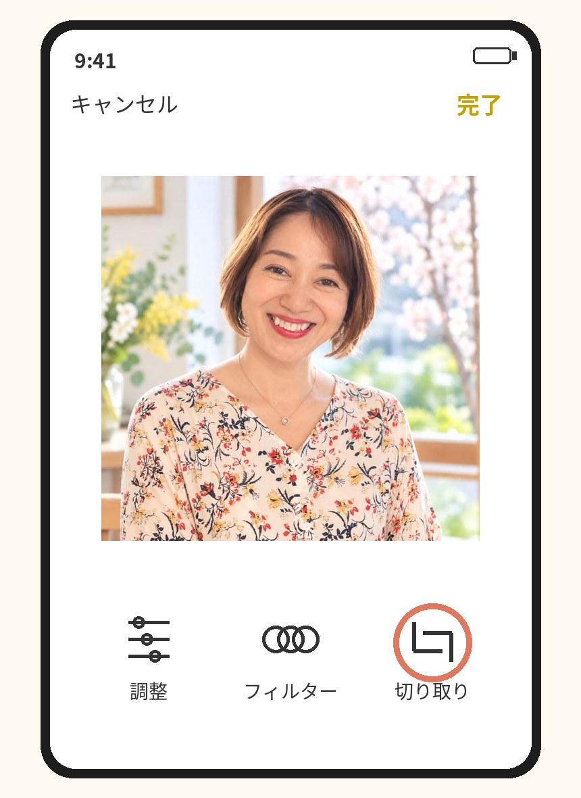
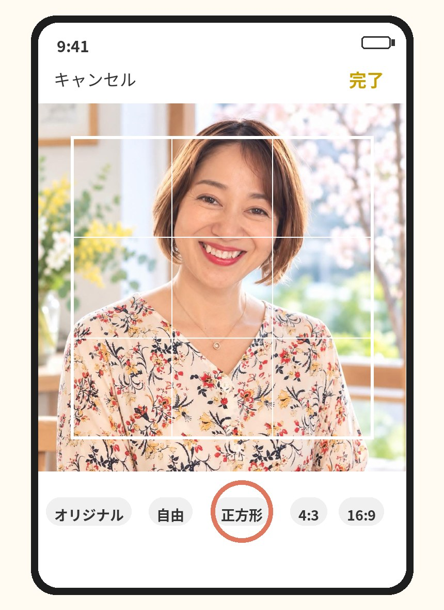
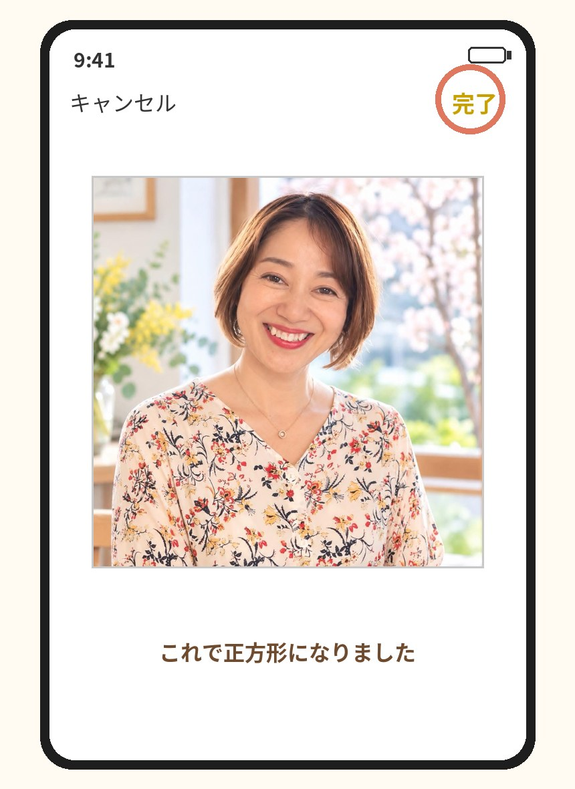

← プロフィール画像の作り方にもどる
プロフィール画像の画面📸
iPhoneで写真を切り取る手順の画面です（説明用のイラストです）。
見終わったら、上の「← プロフィール画像の作り方にもどる」で説明に帰れます🌷
iPhoneの切り取り（4ステップ）
写真を開いて、右上の「編集」をタップします

下のメニューで「切り取り」のマークをタップします

比率は「正方形」を選んで、顔が真ん中に来るよう調整します

右上の「完了」をタップすれば保存できます
← プロフィール画像の作り方にもどる